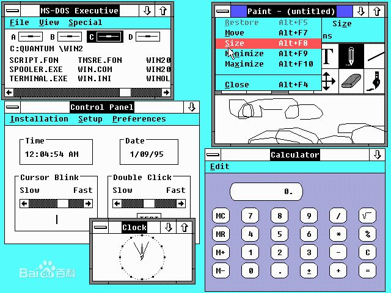

Windows是Microsoft公司在1985年11月发布的星一代窗口式多任务系统，它使PC机开始进入了所谓的图形用户界面时代。

Windows1.x版是一个具有多窗口及多任务功能的版本但由于当时的硬件平台为PC/XT，速度很慢，所以Windows1.x版本并未十分流行。1987年底，Microsoft公司又推出了MS-Windows2.x版，它具有窗口重叠功能，窗口大小也可以调整，并可把扩展内存和扩充内存作为磁盘高速缓存，从而提高了整台计算机的性能，此外它还提供了众多的应用程序。
 1990年，Microsoft公司推出了Windows 3.0，它的功能进一步加强，具有强大的内存管理，且提供了数量相当多的Windows应用软件，因此成为386、486微机新的操作系统标准。随后Windows发表3.1版，而且推出了相应的中文版。3.1版较之3.0版增加了一些新的功能，受到了用户欢迎，是当时最流行的Windows版本。1995年，Microsoft公司推出了Windows 95。在此之前的Windows都是由DOS引导的，也就是说它们还不是一个完全独立的系统，而Windows 95是一个完全独立的系统，并在很多方面做了进一步的改进，还集成了网络功能和即插即用功能，是一个全新的32位操作系统。1998年，Microsoft公司推出了Windows 95的改进版Windows 98，Windows 98的一个最大特点就是把微软的lnternet浏览器技术整合到了Windows 95里面，使得访问Internet资源就像访问本地硬盘一样方便，从而更好地满足了人们越来越多的访问Internet资源的需要。Windows 98已经成为目前实际使用的主流操作系统。从微软1985年推出Windows 1.O以来，Windows系统从最初运行在DOS下的Windows 3.x，
1990年，Microsoft公司推出了Windows 3.0，它的功能进一步加强，具有强大的内存管理，且提供了数量相当多的Windows应用软件，因此成为386、486微机新的操作系统标准。随后Windows发表3.1版，而且推出了相应的中文版。3.1版较之3.0版增加了一些新的功能，受到了用户欢迎，是当时最流行的Windows版本。1995年，Microsoft公司推出了Windows 95。在此之前的Windows都是由DOS引导的，也就是说它们还不是一个完全独立的系统，而Windows 95是一个完全独立的系统，并在很多方面做了进一步的改进，还集成了网络功能和即插即用功能，是一个全新的32位操作系统。1998年，Microsoft公司推出了Windows 95的改进版Windows 98，Windows 98的一个最大特点就是把微软的lnternet浏览器技术整合到了Windows 95里面，使得访问Internet资源就像访问本地硬盘一样方便，从而更好地满足了人们越来越多的访问Internet资源的需要。Windows 98已经成为目前实际使用的主流操作系统。从微软1985年推出Windows 1.O以来，Windows系统从最初运行在DOS下的Windows 3.x，
 到现在风靡全球的Windows 9x/Me/2000/NT/XP/7/10，几乎成为了操作系统的代名词。
到现在风靡全球的Windows 9x/Me/2000/NT/XP/7/10，几乎成为了操作系统的代名词。